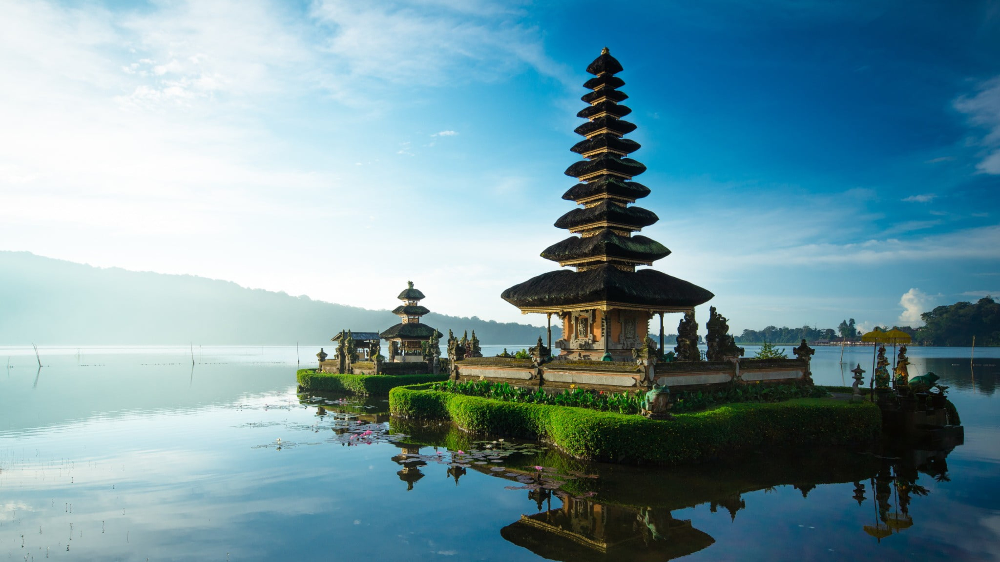
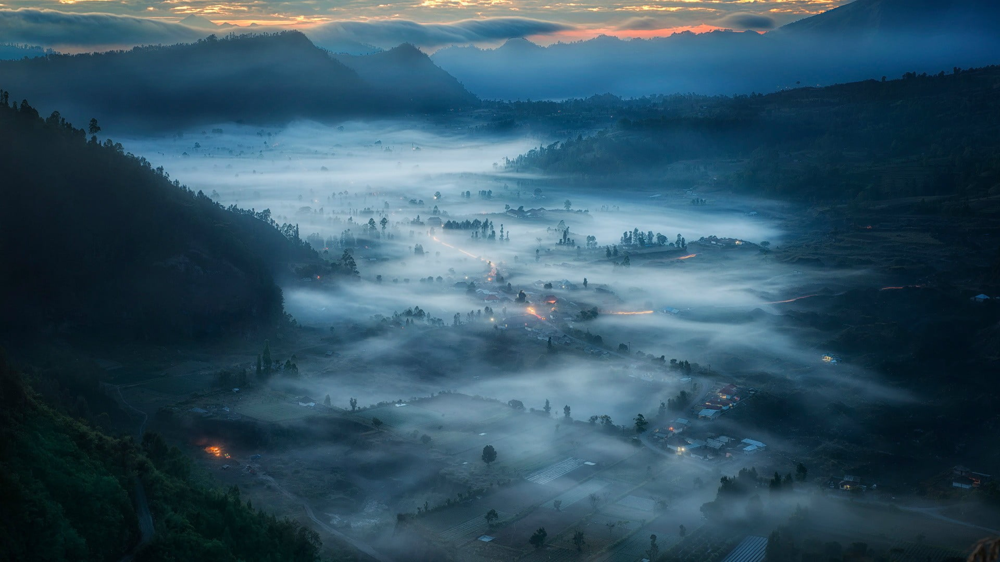
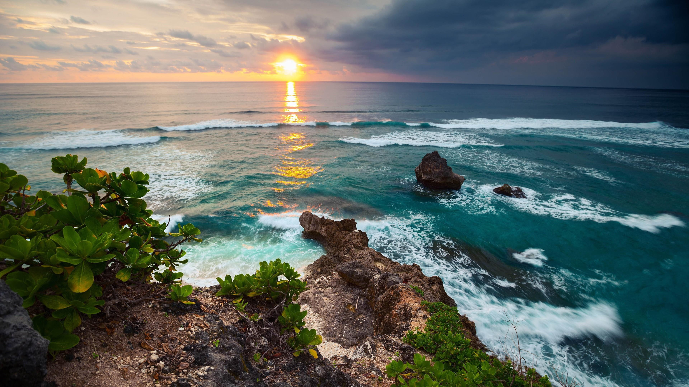
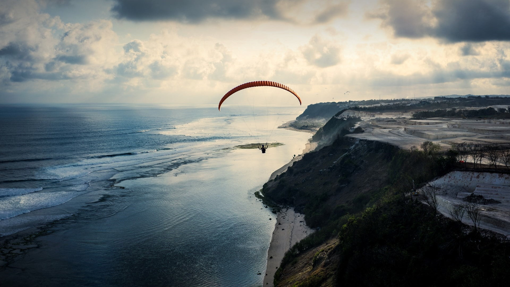
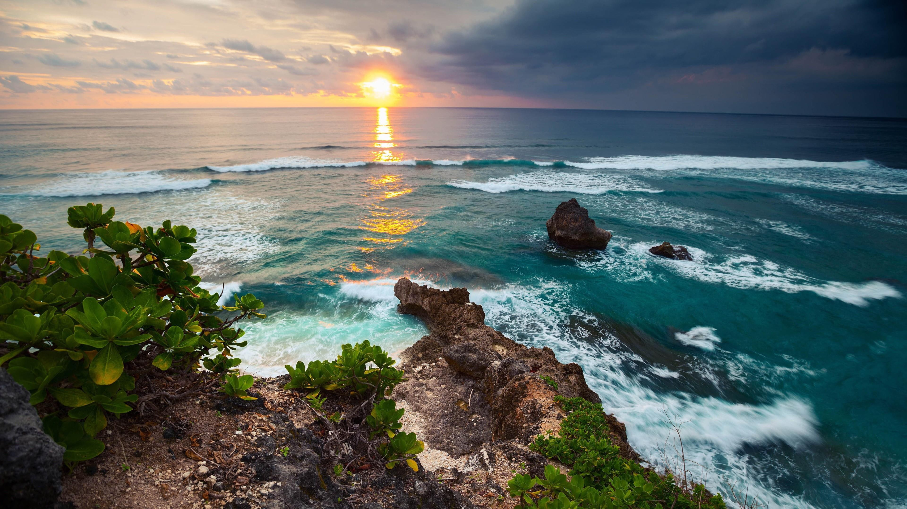
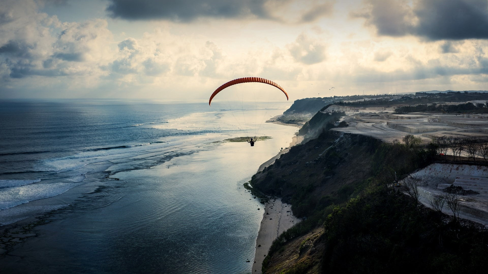

Bali
Etymology:
Bali (/ˈbɑːli/; Balinese: ᬩᬮᬶ), officially the Bali Province (Indonesian:
Provinsi Bali) is a province of Indonesia and the westernmost of the
Lesser Sunda Islands. East of Java and west of Lombok, the province
includes the island of Bali and a few smaller neighbouring islands,
notably Nusa Penida, Nusa Lembongan, and Nusa Ceningan. The provincial
capital, Denpasar, is the most populous city in the Lesser Sunda Islands
and the second-largest, after Makassar, in Eastern Indonesia. The upland
town of Ubud in Greater Denpasar is considered Bali's cultural centre. The
province is Indonesia's main tourist destination, with a significant rise
in tourism since the 1980s. Tourism-related business makes up 80% of its
economy.Bali is the only Hindu-majority province in Muslim-majority
Indonesia, with 86.9% of the population adhering to Balinese Hinduism.It
is renowned for its highly developed arts, including traditional and
modern dance, sculpture, painting, leather, metalworking, and music. The
Indonesian International Film Festival is held every year in Bali. Other
international events held in Bali include the Miss World 2013 and 2018
Annual Meetings of the International Monetary Fund and the World Bank
Group. In March 2017, TripAdvisor named Bali as the world's top
destination in its Traveller's Choice award, which it also earned in
January 2021. Bali is part of the Coral Triangle, the area with the
highest biodiversity of marine species, especially fish and turtles. In
this area alone, over 500 reef-building coral species can be found. For
comparison, this is about seven times as many as in the entire Caribbean.
Bali is the home of the Subak irrigation system, a UNESCO World Heritage
Site. It is also home to a unified confederation of kingdoms composed of
10 traditional royal Balinese houses, each house ruling a specific
geographic area. The confederation is the successor of the Bali Kingdom.
The royal houses are not recognised by the government of Indonesia;
however, they originated before Dutch colonisation
Best places In Bali
1. Pura Tanah Lot
About 20 kilometers northwest of Kuta, Pura Tanah Lot ("Pura" means temple in Balinese) is one of Bali's most iconic temples. Its spectacular seaside setting, on a rocky islet surrounded by crashing waves, is a major wow factor.
For the Balinese people, it is one of the most sacred of all the island's sea temples. Every evening, throngs of tourists from Kuta, Legian, and Sanur find their way through a labyrinth of lanes lined by souvenir sellers to watch the sun setting behind the temple.
2. Mount Batur
Every day in Bali's predawn darkness, hundreds of visitors begin the trek up the 1,700-meter summit of Mount Batur. Once at the top, they watch the sun rise above the lush mosaic of mist-shrouded mountains and the caldera far below. If you're looking for romantic things to do in Bali for couples, this should be top on your list.
This sacred active volcano lies in Kintamani District in Bali's central highlands, about an hour's drive from Ubud. The hike, along well-marked trails, is relatively easy and usually takes about two to three hours. Guided treks typically include a picnic breakfast, with eggs cooked by the steam from the active volcano. On a clear day, the views are spectacular, stretching all the way across the Batur caldera; the surrounding mountain range; and beautiful Lake Batur, the island's main source of irrigation water.
3. Uluwatu Temple
Uluwatu Temple (Pura Luhur Uluwatu) is one of the Bali's most famous temples, thanks to its magnificent clifftop setting. It presides over plunging sea cliffs above one of Bali's best surf spots.
In Balinese, "Ulu" means "tip" or "land's end," and "Watu" means rock, a fitting name for the location of the temple on the Bukit Peninsula, along the island's southwestern tip. Like Pura Tanah Lot, sunset is the best time to visit, when the sky and sea glow in the late afternoon light.
Archaeological finds here suggest the temple is of megalithic origin, dating from around the 10th century. The temple is believed to protect Bali from evil sea spirits, while the monkeys who dwell in the forest near its entrance are thought to guard the temple from bad influences (keep your belongings securely stashed away from their nimble grasp).
A scenic pathway snakes from the entrance to the temple, with breathtaking viewpoints along the way. Only Hindu worshippers are allowed to enter the temple, but the beautiful setting and the sunset Kecak dance performances that take place here daily are more than worth the visit.
The temple lies about 25 kilometers from Kuta.
4. Ubud Monkey Forest
Visiting the Monkey Forest, also known as the Sacred Monkey Forest Sanctuary, is one of the top things to do in Ubud, Bali. It's also one of the best places to visit in Bali if you're an animal lover or photographer. You can walk here in about 10 minutes from the town center in Ubud.
Besides the entertaining troops of grey long-tailed macaques that make their home here, a large part of the appeal is the evocative jungle setting where the monkeys roam free. Paved pathways lead through thick forests of giant banyan and nutmeg trees, where moss-covered statues and ancient temples loom through the dense foliage, imparting an almost mystical feel.
The forest is intended to represent the harmonious coexistence between humans and animals. It also conserves rare plants and is used as a location for researching macaque behavior, particularly their social interaction.
On the southwest side of the forest is one of the three temples found here: the 14th-century Pura Dalem Agung Padangtegal. Here, hundreds of monkeys swing through the trees and clamber over the walls.
Carved deities in the Ubud Monkey Forest
Carved deities in the Ubud Monkey Forest | Photo Copyright: Karen Hastings
In the northwest of the forest, an ancient bathing temple, Pura Beji, nestles next to a cool stream and makes a beautiful backdrop for watching the monkeys' antics.
While visiting the forest, make sure to secure your belongings, and avoid direct eye contact with the animals (and smiling), as this can be interpreted as a sign of aggression. It's also a good idea not to bring any food into the area.
Address: Jalan Monkey Forest, Padangtegal, Ubud, Gianyar, Bali
5. Ubud Art & Culture
famous by the book and movie Eat, Pray, Love, Ubud is also the epicenter of Balinese art and culture. This is where the modern Balinese art movement was born, with the surrounding royal palaces and temples acting as the main patrons.
Today, several excellent local museums and galleries celebrate its evolution and traditions. Art gazing is particularly rewarding here, as many collections are housed in traditional Balinese buildings surrounded by serene tropical gardens.
6.Pura Ulun Danu Bratan
The 17th-century Pura Ulun Danu Bratan is one of Bali's most picturesque temple complexes. It sits on a small island along the western shore of Lake Bratan, in the cool highlands of central Bali. Set against the imposing backdrop of Gunung Bratan, the thatched temples reflect on the lake, and when the water levels rise, they seem to float on its surface.
Lake Bratan is one of Bali's main sources of irrigation and drinking water, and the temple complex is dedicated to Dewi Danu, goddess of the sea and lakes.
An unusual feature is the Buddhist stupa on the left of the entrance to the first courtyard, with figures of Buddha meditating in the lotus position in niches on the square base. The stupa reflects the adoption of Buddhist beliefs by Balinese Hindus.
The best time to visit this sacred Hindu temple complex is early in the day, before the tourist buses arrive. The temple is especially picturesque in the soft morning light, when cool mist sometimes cloaks the lake and the mountains beyond. You can also hire a canoe and paddle out on the lake to explore the meru (thatched shrines) at close range.
Not far from the temple complex, the Bali Botanic Garden (Kebun Raya Bali) is also worth a visit, with its beautiful bamboo forests, begonias, orchid collection, and medicinal plants.
Address: Jalan Bedugul - Singaraja, Candikuning, Baturiti, Kabupaten Tabanan
Photos:


 


